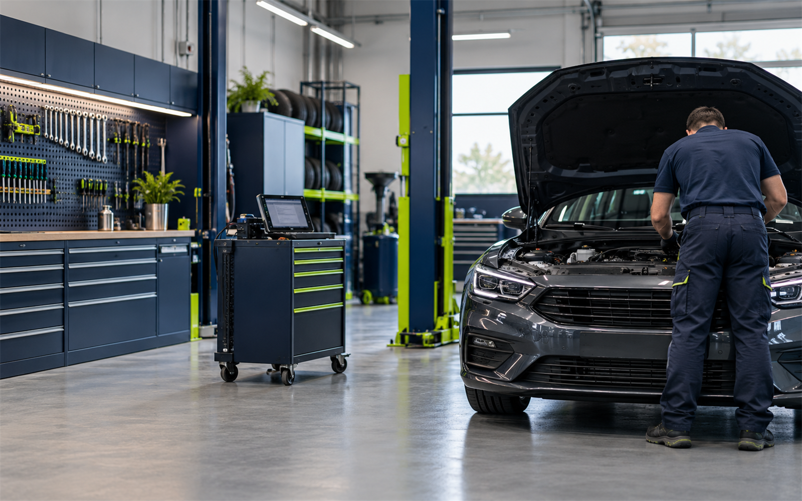

Mechanické opravy
Konkrétní rozsah a termín vždy domluvíme podle zadání.

Mechanické i generální opravy, diagnostika, pneuservis a náhradní díly v Třebíči.
Konkrétní rozsah a termín vždy domluvíme podle zadání.
Konkrétní rozsah a termín vždy domluvíme podle zadání.
Konkrétní rozsah a termín vždy domluvíme podle zadání.
Konkrétní rozsah a termín vždy domluvíme podle zadání.
Mechanické i generální opravy, diagnostika, pneuservis a náhradní díly v Třebíči. Nejdříve si upřesníme situaci, rozsah práce a vhodný termín. Díky tomu dostanete postup, který odpovídá vašemu konkrétnímu zadání.
Veřejné katalogy uvádějí autoservis, pneuservis, diagnostiku, opravy a díly.
Uvedené služby a kontakty vycházejí z veřejně dostupných firemních profilů. Fotografie je ilustrační oborový vizuál.
Zavolejte nebo napište. Podle typu práce a lokality se domluví další krok.
Stačí stručně popsat situaci, místo realizace a přibližný rozsah. Pokud máte fotografie, můžete je zmínit při prvním kontaktu.
Použijte telefon nebo e-mail uvedený níže. Přesný rozsah se potvrdí individuálně.
Jungmannova 138/8, 674 01 Třebíč, Jejkov
Třebíč